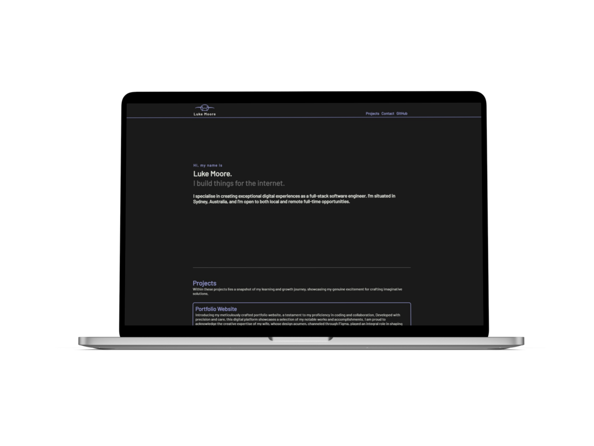
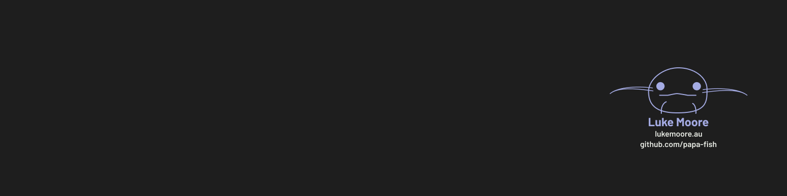

Designing a logo and brand identity for a developer's personal portfolio — where design and code meet.
Crafting a website for a budding developer involves a symbiotic blend of creative design and technical implementation. I took on the responsibility of designing the website's logo and defining its branding elements, while the developer focused on bringing these visions to life through code.
This collaboration harmonised aesthetics with functionality — my designed logo and branding provided the foundation for the developer to construct a fully operational website. The result is a compelling platform showcasing how the fusion of design and development can yield something greater than either alone.

The initial step involved immersing myself in the developer's perspective — comprehending their aspirations and objectives to forge a coherent design strategy. This phase outlined the requisite components: logo, colour palette, typography, and branding directives, which collectively served as the blueprint for subsequent design stages.
During ideation, a diverse range of logo and branding concepts were conceived through iterative brainstorming — exploring various visual languages, colour combinations, and typographic treatments. Selected directions underwent meticulous review by the developer, fostering an iterative process that ensured alignment with their vision and objectives.

With final design assets complete, a seamless collaboration with the developer unfolded. Comprehensive guidance alongside the design files facilitated the translation of the envisioned design into technical implementation.
The final product is now live — visit Luke Moore's portfolio.